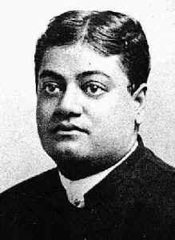
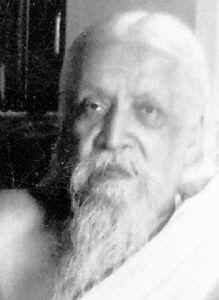
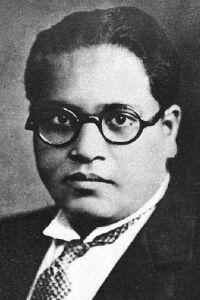
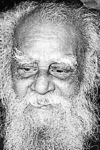

|
|
|||||
Source: http://www.flonnet.com/fl2101/stories/20040116001408700.htm
|
|||||
ESSAY
Postmodernism, Hindu nationalism and `Vedic science'MEERA NANDA
The second and concluding part of the two-part article. IN the first part of this essay I examined how Hindutva ideologues constructed the myth of "Vedas as books of science" (Frontline, January 2). I argued that the anti-science rhetoric of postmodern intellectuals has given philosophical respectability to the eclectic patchwork of science and Hindu metaphysics that goes under the name of Vedic science. In this part, I will examine the philosophical arguments for "alternative sciences" favoured by prominent feminists, environmentalists and postcolonial intellectuals and show how they converge with the right-wing's claims of superiority of "holistic" and "authentic" sciences of Hindus. I want to start by placing these debates in the historical context of Hindu "renaissance".
Postcolonialism and the myth of Hindu "renaissance"
The roots of "Vedic science" can be traced to the so-called Bengal Renaissance, which in turn was deeply influenced by the Orientalist constructions of Vedic antiquity as the "Golden Age" of Hinduism. Heavily influenced by German idealism and British romanticism, important Orientalists including H.T. Colebrooke, Max Mueller and Paul Deussen tended to locate the central core of Hindu thought in the Vedas, the Upanishads and, above all, in the Advaita Vedanta tradition of Shankara. Despite the deeply anti-rational and idealistic (that is, anti-naturalistic) elements of Advaita Vedanta, key Hindu nationalist reformers - from Raja Ram Mohun Roy and Bankim Chandra Chatterjee to Swami Vivekananda - began to find in it all the elements of modernity. Vivekananda took the lead in propagating the view that the monism of Advaita Vedanta presaged the future culmination of all of modern science. Since modern science denied the role of any supernatural force outside nature, Vivekananda claimed that only Vedantic monism was truly scientific for it treated God as an aspect of nature and did not invoke any force external to nature.
Prime Minister Atal Bihari Vajpayee at Rajghat. Hiding behind their great mascot does not help postmodern scholars, for Hindutva also claims Gandhi to be its own mascot.
A slight digression on the subject of Indian "renaissance" might be appropriate here. Through constant and loud repetition, neo-Hindu thinkers have created a myth that Brahminical traditions of learning represent the golden age of science and reason in early India. The Hindutva literature is replete with glowing tributes to Hindu "renaissance", which they claim to be similar to the European Renaissance that ushered in the modern age in the West. What they forget is that the Renaissance in the West re-discovered the humanistic and naturalistic sources of the Greek tradition that had been overshadowed by the Catholic Church - the Renaissance humanists rediscovered this-worldly philosophy of Aristotle and critical-realist Socrates over the other-worldly philosophy of Plato. The neo-Hindu "renaissance", in contrast, re-discovered the most mystical and anti-humanistic elements of the Vedic inheritance - Advaita Vedanta - that had always overshadowed and silenced the naturalistic and scientific traditions in Hinduism and Buddhism. Neo-Hinduism is no renaissance, but a revival.
There is no denying that the neo-Hindu "discovery" of modern science in ancient teachings of Vedas and Upanishads had a limited usefulness. Since they had convinced themselves that their religion was the mother of all sciences, conservative Hindus did not feel threatened by scientific education. As long as science could be treated as "just another name" for Vedic truths, they were even enthusiastic to learn it. The Brahminical traditions of learning and speculative thought served the upper castes well, as they took to modern English education, which included instruction in scientific subjects. Those who would explicitly use scientific learning to challenge the traditional outlook were either lower down on the caste hierarchy or "godless Communists" anyway, and could be safely ignored. The great neo-Hindu "renaissance" succeeded in turning empirical sciences into the handmaiden of the Vedic tradition - the role reason has performed throughout India's history. This is the tradition that the Sangh Parivar is institutionalising in our schools, universities and the public sphere.
Let us see what India's best-known contemporary public intellectuals have to say on this matter. As it happens, the emergence of neo-Hinduism in 19th century Bengal has perhaps been the most written about episode in modern India's intellectual history. All our best-known intellectuals whose names are practically synonymous with postcolonial theory around the world - Ashis Nandy, Partha Chatterjee, Gayatri Spivak, Dipesh Chakrabarty and the Subaltern Studies historians - have cut their scholarly teeth on the emergence of neo-Hindu thought in the Bengali bhadralok circles. These intellectuals stand out because they work with a post-structuralist rejection of the very possibility of the idea of dispassionate and objective knowledge of the real world in any domain, natural or social. Following the political writing of French philosopher Michel Foucault, made popular among the historians of colonialism by the writings of Edward Said, these scholars see Western sciences as serving colonial interests in defining the non-West as inferior, irrational and unscientific. Indian intellectuals have both contributed to the development of this critique of colonial knowledge and applied it to the Indian condition.
PICTURES: THE HINDU PHOTO LIBRARY
Jawaharlal Nehru
By and large, these postcolonial scholars have criticised the neo-Hindu penchant for scienticising the Vedas, but for reasons that actually open the door to an even more radical defence of Vedic science that is now emerging in Hindutva literature. Ashis Nandy and Partha Chatterjee, both writers of international best-sellers on the emergence of modern thought in India, condemned the emerging Hindu modernists all across the political spectrum - from the apologists for Hinduism such as Vivekananda, Aurobindo and Bankim Chandra Chatterjee to the liberal, secular-humanist Nehru - not for so falsely and so self-servingly appropriating modern science in the service of propagating religious orthodoxy and not for confusing myth and science in order to defend their mythology. No, that kind of critique of nativism that would defend the distinctiveness of science and insist upon its potential for demystification of religious reason was considered too passé, too "positivist" by our avant-garde theorists. Rather, Nandy, Chatterjee and their followers condemned Indian nationalists for even daring to apply alien, colonial categories of thought to India's own traditions and ways of knowing.
For these postmarked intellectuals, the cardinal sin of Hindu nationalists was not their defence of the high-Hindu tradition - a tradition which has for centuries contributed to the worst kind of ignorance and social inequality. Their cardinal sin was their capitulation to modern scientific thought itself, which they tried to appropriate for Hinduism (as in the case of Vivekananda, Bankim Chandra and even Nehru), or which they tried to use for secular Enlightenment (as in the case of Marxist and socialist humanists like Nehru). Incidentally, these two positions seem to exhaust the entire range of nationalism. The valiant attempts of Dalit and non-Brahmin intellectuals such as B.R. Ambedkar, E.V. Ramaswamy Periyar, Jyotiba Phule and Iyothee Thass to use the new knowledge to liberate themselves from the shackles of tradition are simply invisible in the postmodernist literature which is keen on showing modern science as an agent of oppression and mental colonialism. As long as Indian thought was being measured in modern scientific terms, whether to praise it, or to demystify it, the Indian mind was being "colonised" and it was denied the "agency" to define its own agenda and its own solutions. Both the Hindu right and the Nehruvian left, as long as they remained prisoners of modern scientific ways of thinking, were equally "derivatives" of their colonial masters.
Authentic national liberation, on this account, can only come with the rediscovery of authentic traditions of India which, apparently, were only understood by Mahatma Gandhi. For all their nods to the anti-essentialism of postmodernism, Indian critics of modernity practise a sly form of "strategic essentialism" (Gayatri Spivak's term) that treats Indian traditions as unique to India which cannot be understood by outsiders. True national liberation will mean a rediscovery of India's unique gestalt, which, in the postcolonial narrative, lies in its holism, monism or non-dualism, as compared to the tendency of the Western science towards separation of objects from their context. Indian thought is not to be seen either as a copy of modern science, or somehow lacking in empirical sciences, but as encoding a wholly different kind of science altogether, which is the duty of post-secular, postmodern intellectuals to discover and cultivate. Coming from the traditions of the Gandhian and populist left, the postmodernists tend to find these alternative traditions among the non-modern habits of the heart of the humble, folk traditions of women, peasants, village folk and assorted subaltern groups. Gandhi became their patron saint of this uniquely Indian, non-modern way of life. "Real India" equals Gandhi equals "innocent traditions" of non-modern "communities". Anyone challenging any of the factors in the equation was declared to have a "colonised mind".
This critique of modernist nationalism-as-mental-colonialism has come to serve as the fig leaf for the postmodernists as they scramble to dissociate themselves from the contemporary Hindutva movement, which has also nailed its colours to "decolonisation of the Indian mind". Nandy and his many admirers are trying to distance themselves from it by continuing with their critique of the Hindu nationalism as being wedded to modernism. They point to the modernist, scientistic rhetoric of Hindutva propagandists and proclaim Hindutva to be just one more symptom of modernity. The problem is that using modernist rhetoric does not make one modern. On the contrary, by framing the traditional Hindu worldview in a modernist vocabulary, Hindutva is co-opting modern ideas, giving traditions a modern gloss to make them palatable to the educated middle classes. Hindutva is a reactionary modernist movement that accepts the instrumental uses of science (that is, technology) but resists the secular enlightenment that is a necessary precondition of modernity. Hiding behind the great mascot of postmodern scholars, Gandhi - supposedly the guardian angel of the "innocent" folk traditions - does not work either, for Hindutva also claims Gandhi to be its own mascot. Hindu nationalists have no problem with Gandhi's deeply anti-secular and anti-modern world-view; they "only" dislike and disown his pacifism.
Postmodernism and "alternative sciences"
Yet, one could argue that just because postmodernist intellectuals have taken a position against the Enlightenment-style use of science as a cultural weapon against the authority of the traditions does not automatically make them an ally of the religious right. One could, after all, justly criticise the role of science and technology in furthering Western exploitation of the colonies and perpetuating patronising attitudes toward the natives. Science is not beyond criticism, and critics of science do not automatically deserve condemnation.

Vivekananda
The problem is that postmodernist intellectuals do not stop at criticising any specific political abuse of scientific knowledge. Instead, they attack the very idea of objective knowledge as a myth of the powerful who want to claim the status of truth for their own self-serving social constructions of reality. Likewise, postmodernist attack on the "Western-ness" of science goes beyond pointing out any specific linkages between science and Western/imperialist interests. Instead they attack the claim of universalism of science as a cover for Western dominance.
Once they decry the very idea of objectivity and universalism, the critics open the gates wide to the idea of "alternative sciences". The idea is that modern science offers only one way to classify, observe and understand the regularities of nature: there is nothing inherently objective and scientific about it. Other cultures, the argument goes, if they want to really "decolonise their minds", must develop their own scientific methods which are in keeping with their own religion and culture - "different cultures, different sciences", is the postmodern slogan. Since all knowledge rests on the shifting sands of myths, models and analogies (or "paradigms", as the more technical name goes), which scientists just pick up through their textbooks, there is no reason why sciences of non-Western cultures cannot constitute new "alternative universals" that can be taught in textbooks and laboratories around the world.
These radical critiques of objectivity and universalism have become so popular that they have acquired a ring of truth among social critics. But all these arguments denigrating the rationality of science are based upon a flawed understanding of science that has been rejected many times by working scientists and prominent philosophers of science. A complete debunking of post-modern misunderstanding of how science actually works and why objectivity is possible despite the deeply social nature of science will require a different set of articles. Suffice it to say, the radical denigration of science has very little following among the mainstream of scientific community and in the mainstream of philosophy and history of science.
I now examine three distinct arguments that have emerged in the Indian postmodernist literature which converge almost exactly with the Hindutva's defence of the superiority of Vedic sciences. These three are the decolonisation argument, the anti-dualism argument and the symmetry argument.
The decolonisation of science argument
Hindutva ideologues see themselves as part and parcel of postcolonial studies. Decolonisation of the Hindu mind, the Hindu Right claims, requires understanding science through Hindu categories. Echoing the postcolonial critiques of epistemic violence, Hindutva ideologues such as Murli Manohar Joshi, Konrad Elst, Girilal Jain, David Frawley, N.S. Rajaram and others see any scientific assessment of the empirical claims made by the Vedic texts as a sign of mental colonialism and Western imperialism. Many of these Hindutva ideologues cite the work of postcolonial scholars such as Edward Said, Roland Inden, Ashis Nandy, Claude Alvares, Gayatri Spivak and subaltern studies historians with great respect.
The Hindu Right combines this demand for authenticity with an essentialist understanding of culture borrowed straight from Oswald Spengler's Decline of the West, which holds that each culture has an innate nature, a temper, which must guide all its cultural products from mathematics and physics to painting and poetry. This view of the innate nature of nation - the nation's svabhava or chitti - is propounded by Deen Dayal Upadhyaya's theory of "Integral Humanism", which constitutes the official philosophy of the Bharatiya Janata Party. In fact, it is part of the BJP's official manifesto that it will use India's innate Hinduness as a "touchstone" to decide what sciences will be promoted and how they will be taught. Using this touchstone of an innate, timeless Hindu svabhava, Hindutva literature still holds on to the defunct theories of vitalism as valid science. (Vitalism in biology holds that living beings require a special vital force, variously termed prana or shakti in the Indian literature, over and above "mere" atoms and molecules. In India, Jagdish Chandra Bose first claimed to find evidence of consciousness in plants. Bose's work was falsified and rejected by mainstream biology in his own life-time. It is still touted as India's contribution to world science in Hindutva literature.) Again, it is against the touchstone of Vedanta that Hindu apologists feel justified in interpreting the paradoxes of quantum physics in a mystical manner. There are perfectly realistic explanations of quantum mechanics, which are sidelined in Vedic science literature, to claim that modern physics "proves" the presence of mind in nature, just as claimed by Vedanta.
Reductionist science vs holistic science
The gist of this argument, as it appears in Hindu nationalist writings on Vedic science, is simple - all that is dangerous and false in modern science comes from the Semitic monotheistic habit of dualistic and "reductionist" thinking, which separates the object from the subject, nature from consciousness, the known from the knower. All that is truly universal and true in modern science comes from the Hindu habit of "holistic" thinking, which has always seen the objects in nature and the human subjects not as separate entities but as different manifestations of the same universal consciousness. For the non-logocentric Hinduism, reality is not objective, but "omnijective", a co-construct of mind and matter together. While Western science treats nature as dead matter, Hindu sciences treat nature as a sacred abode of gods. Thus Hindutva scholars claim that traditions of yoga, transcendental meditation (TM) and Ayurveda are sciences of the future, for they bring matter in alignment with the "cosmic energy" that permeates all matter. Moreover, Hindu approaches to nature are seen as ecological by definition as they do not treat nature as mere matter to be exploited for private use.

Aurobindo
This view of superiority of Hinduism's "holism" rests upon the strange and totally mistaken assumption that Hindu chauvinists share with left-wing critics of science - that the fundamental methodology of modern science, what is called "reductionism", is not just mistaken but politically oppressive. Reductionism in science simply means a bottom-up approach to understanding complex natural phenomena by first isolating the lower-level constituents and studying their interactions under controlled conditions. Reductionism seeks the explanation of the whole by eliminating the need for postulating any extra forces ( that is, consciousness, vital force and so on) over and above the relationships between the building blocks that can be experimentally tested. Far from being simple-minded or sinister, as critics assume, nearly every advance in understanding complex systems - from the DNA replication at the cellular level to ecological systems - owes its success to a reductionist approach to the fundamental building blocks of nature.
Owing to a fundamental misunderstanding of how science actually works, coupled with a great deal of cynicism, many left-wing critics among feminist, environmental and anti-imperialist movements have developed a knee-jerk condemnation of reductionism. Reductionist science is considered bad science with politically oppressive implications. Feminists, including such world-renowned feminist icons as Carolyn Merchant, Sandra Harding and Donna Haraway, see it as a masculine way of breaking the unity between the object and the subject. Environmentalists, including India's own Vandana Shiva and like-mined eco-feminists, see reductionism as opening the way to ruthless exploitation of nature by divesting it of all sacred meanings. (Eco-romantics ignore all counter-examples where sacredness of nature serves to control access over sacred groves, rivers and other resources of the commons.) Postcolonial critics, in their turn, see reductionism as a result of Western and capitalist habit of thinking in terms of opposed classes of `us and them'.
These kinds of ill-understood and politically motivated challenges to a fundamental methodological norm of modern science have prepared the ground for Hindutva's claims that Hinduism provides a more "holistic", more complete, more ecological and even more feminist way of relating with nature. Most of the claims of superiority of "holism" are unsubstantiated. On closer examination, they end up affirming pseudo-sciences involving disembodied spirit acting on matter through entirely unspecified mechanisms. Most of the claims of greater ecological and feminist sensitivity in the Hindu practice of treating all nature as a sacred and interconnected whole turn out to be empirically false. In fact, quite often the faith in the divine powers of some rivers and plants serves as an excuse not to care for them adequately, precisely because they are considered to share God's miraculous powers to recover and stay pure. For all the falsehoods and obscurantisms, the claims of Hindu (or Eastern, more broadly) holism thrive in the academia because of the radical academics' own mistaken and overblown critique of the reductionist methodology of science.
The symmetry argument
The symmetry argument claims that all local sciences are equally "scientific" (that is, rational, coherent and able to explain observed phenomena) within their own cultural contexts. Modern science, the argument goes, ought to be treated "symmetrically" with all other ways of knowing. As we have seen, this is the crux of the social constructivist and postmodern attacks on modern science.
This argument lies at the heart of the theories of "Vedic physics" and "Vedic creationism". That the verses of the Rig Veda are actually coded formulas of advanced theories of physics has been recently claimed by Subhash Kak, an engineer working in the United States. And a Vedic alternative to Darwinian evolution by natural selection is being pushed by Michael Cremo and his fellow Hare Krishnas in the U.S. What sets these newer theories is their unabashed and bold defence of Vedic mysticism as a legitimate scientific method within the Vedic-Hindu metaphysical assumptions, as rational and empirically adequate as the best of modern science, and as deserving of the status of universal objective knowledge as the conventionally accepted theories of matter and biological evolution.
In a barrage of books and essays, most recently summarised in the 1995 publication, In Search of the Cradle of Civilisation, Subhash Kak has claimed to find, in a coded form, advanced knowledge of astronomy and computing in the Rig Veda. According to Kak, the design of the fire altars prescribed in the Rig Veda - how many bricks to put where and surrounded by how many pebbles - actually code such findings of modern 20th century astronomy as the distance between the sun and the earth, the length of solar and lunar years and the speed of light. All the Vedic values match exactly with the values we know through modern 19th and 20th century physics. The number of bricks and pebbles, moreover, corresponds with the number of syllables in the Vedic verses. The conclusion: "the Vedas are books of physics."

Dr. B.R. Ambedkar
Finding relatively advanced abstract physics in the Rig Veda, the earliest of the four Vedas, is of crucial importance to Hindutva. There is a concerted attempt to prove that the Rig Veda was composed at least around three millennia B.C., and not around 1500 B.C as previously thought. There is also a massive effort afoot in Hindutva circles that the Aryans who wrote the Rig Veda presumably in 3000 B.C. were indigenous to the landmass of India. Under these circumstances, finding advanced physics in Rig Veda will "prove" that India was truly the mother of all civilisations and produced all science known to the Greeks and other ancient cultures.
But anyone making such dramatic claims has to answer the question: How did our Vedic ancestors know all this physics? What was their method?
Kak and associates (including David Frawley and George Feuerstein, co-authors with Kak of In Search of the Cradle of Civilisation) answer, incredibly, that the Vedic scientists found out the laws of physics through deep introspection. Yogic meditation allowed Vedic sages to see in their minds' eyes, the likenesses, homologies and equivalences between the cosmic, the terrestrial and the spiritual. This method of seeing analogies and equivalences may be considered magical in the West, they argue, but it is perfectly scientific within India's non-dualist, monist metaphysics which allows no distinctions between matter and spirit, between physical and the psychic, between animate and the inanimate - all are united by the same spiritual energy that is in all. Within these assumptions, yogic introspection is a method of science. Because all science is paradigm-bound, Kak et al insist, citing the authority of Thomas Kuhn and Paul Feyerabend, the much-misunderstood gurus of postmodernists, Vedic science is perfectly scientific within the paradigm of Vedic assumptions.
In fact, Kak et al are not alone in defending the scientificity of yogic meditation as a valid scientific method. Maharishi Mahesh Yogi's "unified science" is based upon this logic. This kind of cultural defence is routinely invoked by those defending such esoteric pseudo-sciences as Vedic astrology and paranormal beliefs (past-birth memories, out-of-body experiences and reincarnation).
A similar defence of the method of bhakti yoga as a legitimate source of holistic knowledge lies at the basis of the enormous mass of writings coming out of the Bhakti Vedanta Institute in the U.S., the headquarters of the Hare Krishnas. In a new book, Human Devolution, Michael Cremo, a devout Hare Krishna, has boldly proposed a Vedic alternative to Darwinian evolution. Cremo claims that human beings have not evolved up from lower animals, but rather fallen, or devolved, from their original unity with pure consciousness of Brahman. (In a previous book, Forbidden Archaeology, Cremo and his associates tried to prove that the fossil record actually supports the Vedic time scale of literally millions of years of life on earth, including human life.) As evidence, Cremo cites every possible research in paranormal ever conducted anywhere to "prove" the truth of holist Vedic cosmology which proposes the presence of a spiritual element in all matter (which takes different forms, thereby explaining the theory of "devolution").

E.V. Ramaswamy Periyar
This remarkable compendium of pseudo-science is premised upon the assumption that modern science is a prisoner of Western cultural and religious biases and, as a result, Western scientists have created a "knowledge filter" which keeps out the evidence that supports the Vedic cosmology. Their point is that once you remove the Western assumptions, the method of yoga can be treated as a legitimate source of scientific hypotheses. These Vedic knowledge-claims can be verified by the community of other yogic knowers who have "purified" their sense through meditation to such an extent that they can "directly realise" those signs from the spirit-world that are looked down upon by Western-trained scientists as "paranormal".
Utterly incredible though they are, and utterly devoid of any empirical support, Vedic physics and Vedic creationism are being touted as serious scholarship based upon the assumption that different cultural assumptions sanction alternative methods as rational and scientific.
POSTMODERN intellectuals have taken their disillusionment with the many shortcomings of the modern world into a radical denunciation of modern science itself. They have denounced the status of modern science as a source of universally valid and objective knowledge as a sign of Western imperialism, patriarchal biases and Christian dualist thinking. Many prominent public intellectuals in India, sympathetic to populist, indigenist currents in left-inclined social movements, have embraced the postmodernist suspicion of science, and called for "alternative sciences" which reflect the cultural preferences of India's non-modern masses.
The question before the defenders of "alternative sciences" is this: What do they have to say to the defenders of "Vedic sciences"? For example, what reasons can they give against the supposed scientificity of Vedic astrology? Can they hold on their relativist view of all sciences as social constructs and yet challenge the scientisation of the Vedas that is going on in the theories of Vedic physics or Vedic creationism?
Any erosion of the dividing line between science and myth, between reasoned, evidence-based public knowledge and the spiritual knowledge accessible to yogic adepts, is bound to lead to a growth of obscurantism dressed up as science. It is time secular and self-proclaimed leftist intellectuals called off their romance with irrationalism and romanticism. It is time to draw clear boundaries between science and myth, and between the Left and the Right.
Meera Nanda is the author of Prophets Facing Backward: Postmodern Critiques of Science and Hindu Nationalism (Rutgers University Press, 2003). An Indian edition of the book will be published by Permanent Black in early 2004. She is also the author of Breaking the Spell of Dharma and Other Essays (Three Essays Collective; 2002).
================================================
Source: http://www.flonnet.com/fl2101/stories/20040116001408700.htm
Page 1 2
[Mukto-mona] [Articles] [Recent Debate] [Special Event ] [Moderators] [Forum]